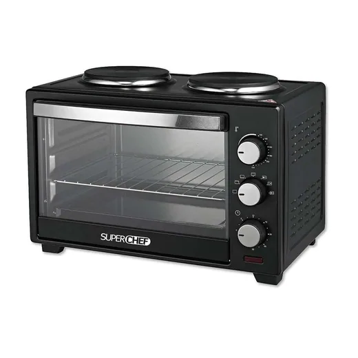
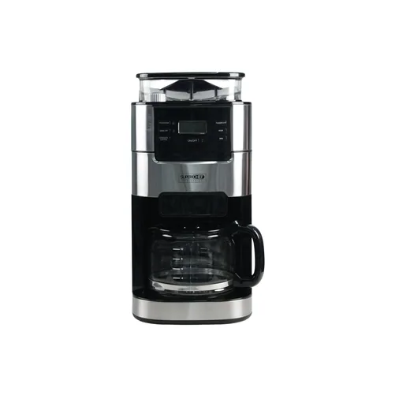
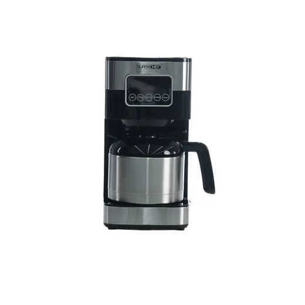
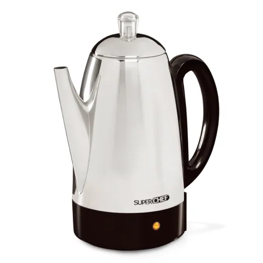
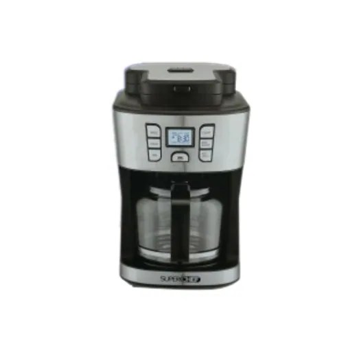

Inicio › Licuadoras y cafeteras

Super Chef · Modelo A414JK25AD
Horno Tostador D/Conveccion 1.0FT Superc
L 1,890
En Diunsa
Precio en cada tienda
| Tienda | Precio | Antes | Disponibilidad | |
|---|---|---|---|---|
| Diunsa | L 1,890 | Disponible | Ver en tienda › |
Precios referenciales tomados de cada tienda el 14 de noviembre de 2026. El precio válido es el que muestra la tienda al comprar.
Otros licuadoras y cafeteras Super Chef

Cafetera 12 Tazas con Grinder Super ChefL 1,890En Diunsa
Cafetera 12 Tazas 1.2 Lt- Touchscreen SuL 1,390En Diunsa
Cafetera Electrica AC/Inox 12 Tazas SupeL 1,390En Diunsa
Percoladora con Molino 1.8LTS 12 Tazas SL 1,390En Diunsa Horno Multifuncional 9L C/Cafetera 4 TazL 1,190En Diunsa
Horno Multifuncional 9L C/Cafetera 4 TazL 1,190En Diunsa Licuadora Superchef 2VEL/Vidrio KP506AGFL 1,090En Diunsa
Licuadora Superchef 2VEL/Vidrio KP506AGFL 1,090En Diunsa Percoladora Super Chef 12 TzasL 849En Diunsa
Percoladora Super Chef 12 TzasL 849En Diunsa Licuadora Superchef 10VEL/1.5LT Jarra ViL 769En Diunsa
Licuadora Superchef 10VEL/1.5LT Jarra ViL 769En Diunsa